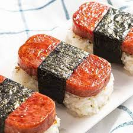

Spam Musubi

Description
Spam Musubi was allegedly invented by a Japanese-American woman from Hawaii named Barbara Funamura. So you can see how spam musubi might be associated with multiple cultures. Regardless of what people you associate it with, the combination of teriyaki-glazed spam, lightly-vinegared (in some jurisdictions) rice and crisp seaweed provide both a flavor and textural delight.
From the Japanese word "Musubu", meaning "to tie", Spam Musubi is rice and glazed spam tied up with a seaweed strip. A mold will make your task simpler, but people have been using the Spam can itself as a mold for decades. Let's begin!
Ingredients
- 6 cups cooked Japanese medium grain rice
- 1 (12 ounce) can of spam, sliced into 1/2 inch thin slices
- 12 2 inch wide, full sheet long nori strips
- 1/4 cup teriyaki sauce
- 1 1/2 tablespoons seasoned rice vinegar
Steps
- Gather all your ingredients.
- Place as many slices of spam as will fit on a preheated pan.
- Sear until browned on each side. Roughly 3 minutes per side.
- Remove seared spam and set aside until all the spam slices are seared.
- Lower heat to low.
- Return spam to pan in a single layer.
- Brush teriyaki sauce over both sides of spam and let simmer for about 2 minutes.
- Remove glazed spam and set aside until all the spam slices are glazed.
- In a large mixing bowl, combine rice and vinegar.
- Fold the rice in front of a fan or fan it yourself with an uchiwa (Japanese hand fan) until the rice is at least roomtemp.
- In a musubi mold or empty Spam can, layer your rice and glazed spam.
- Press to firm the rice and to allow it to soak up the glaze.
- Carefully remove pressed rice and spam.
- Wrap with strip of nori seaweed.
- Repeat steps until rice, spam and seaweed strips are used up.